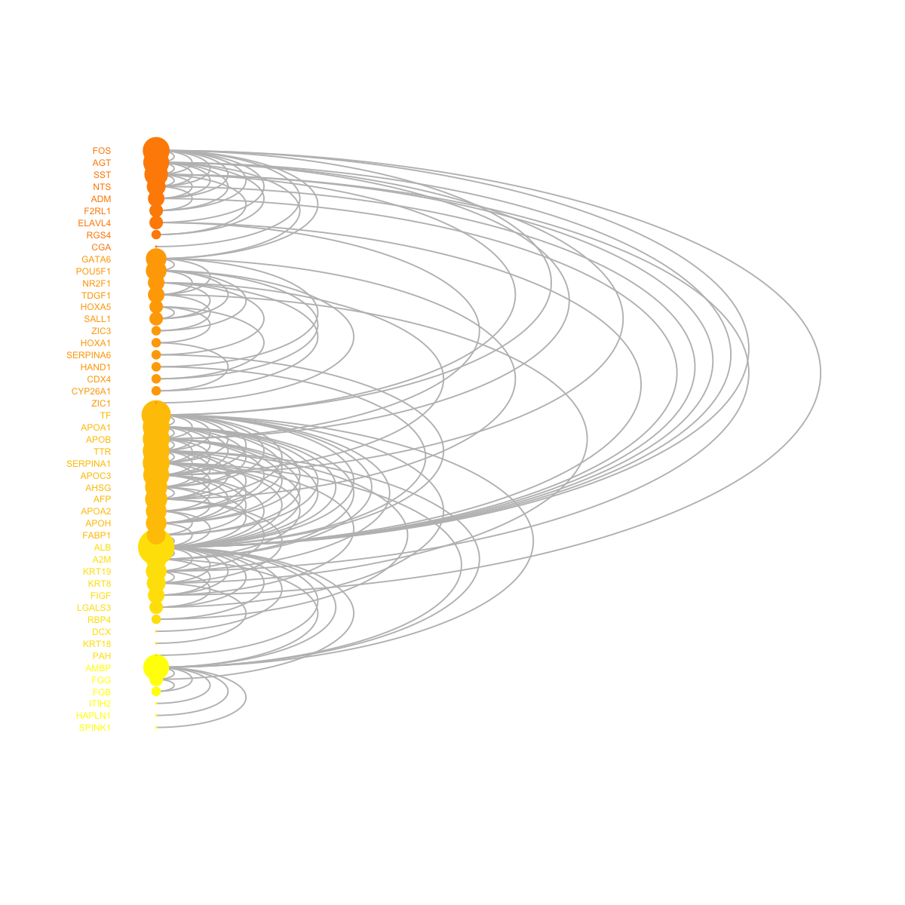
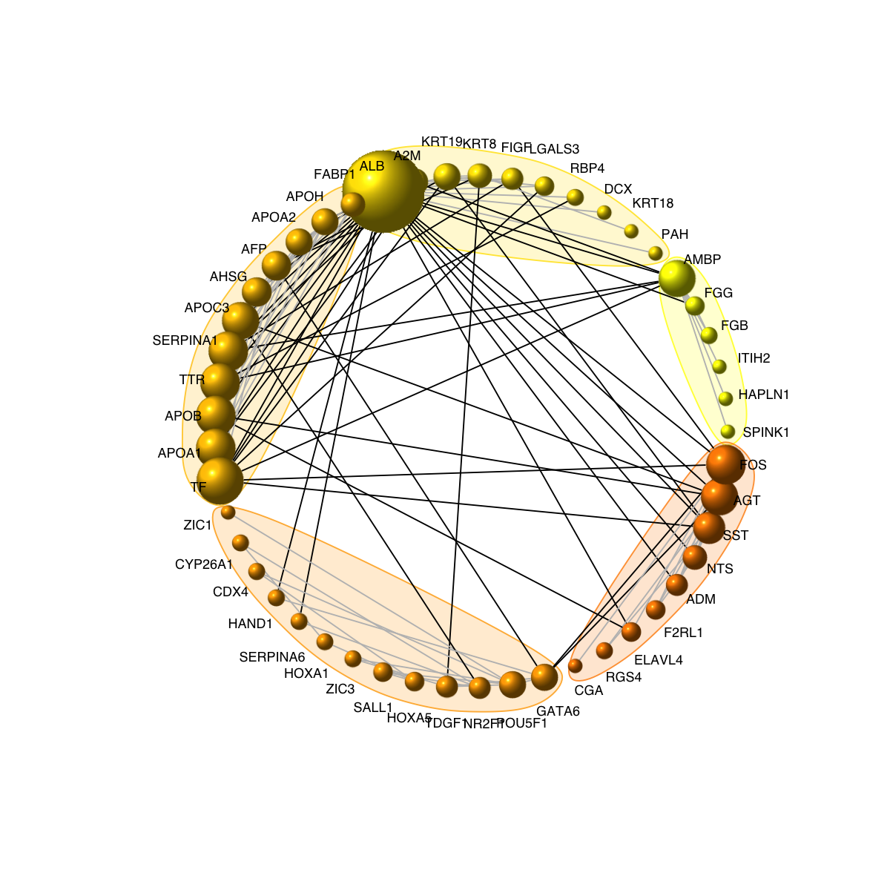
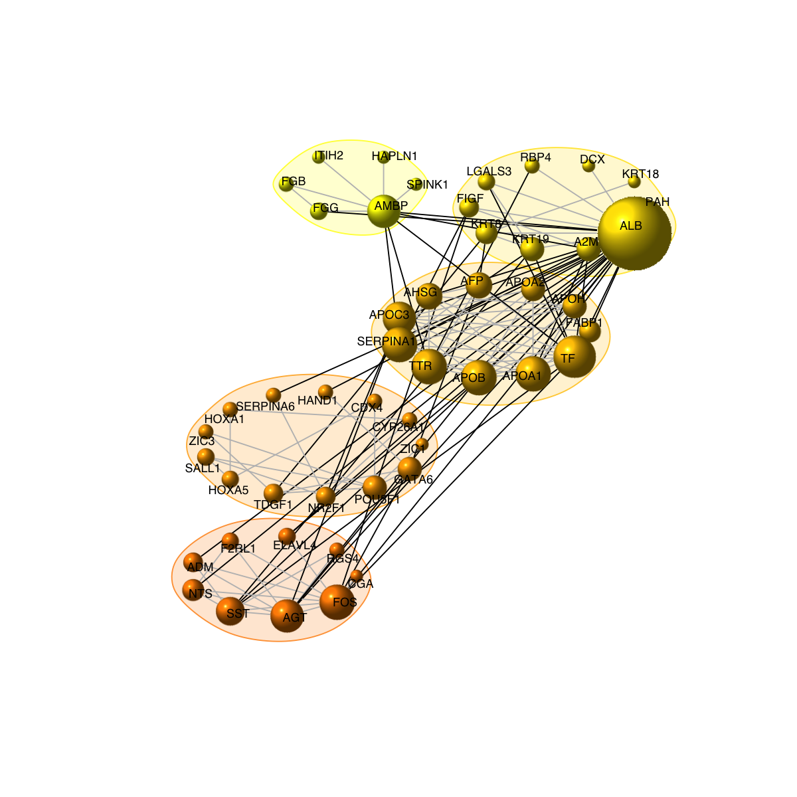
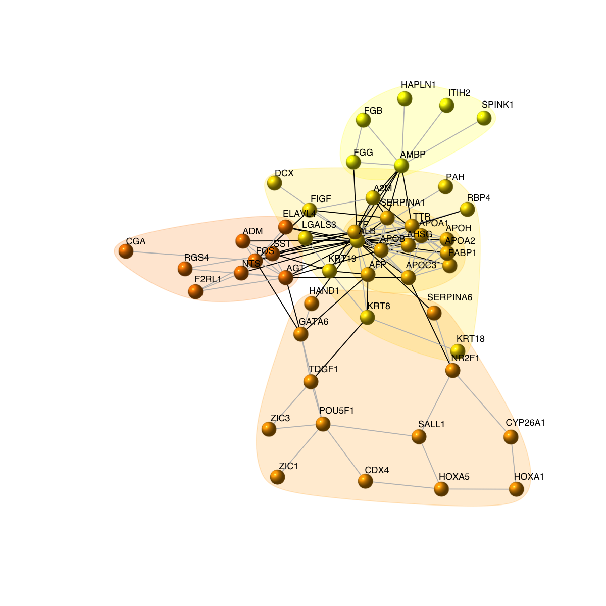
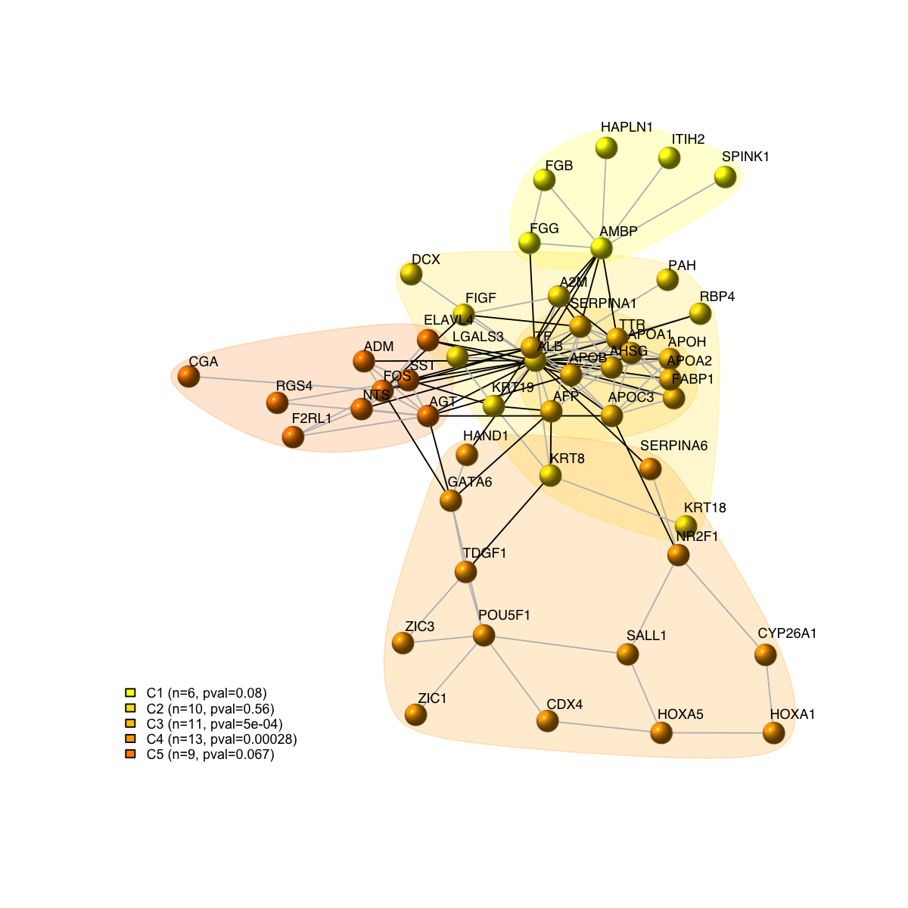
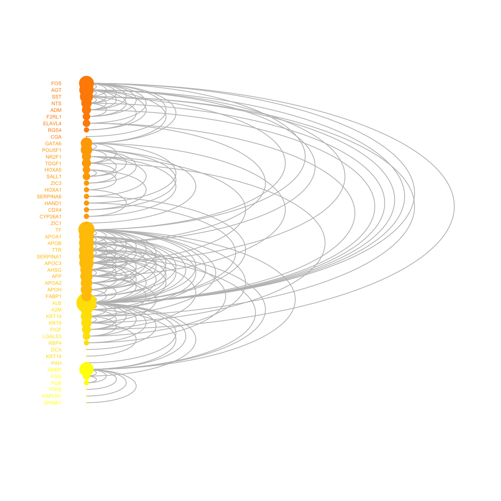
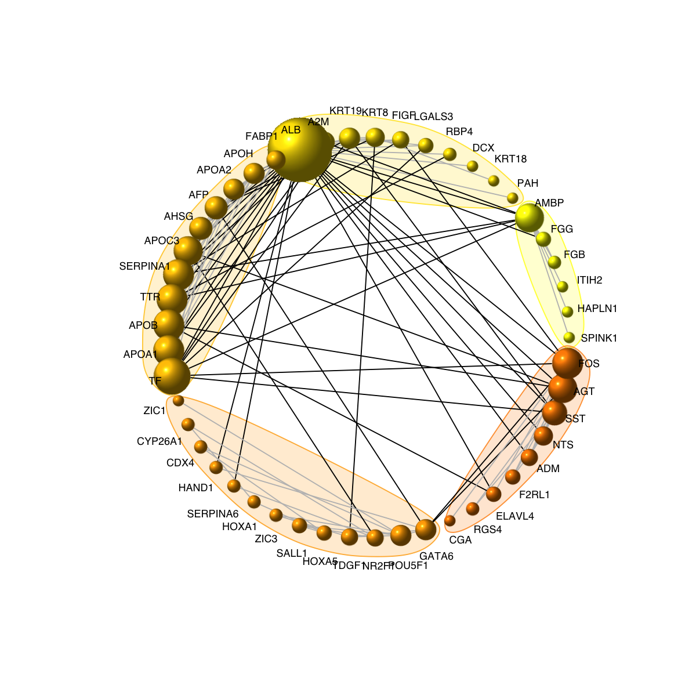
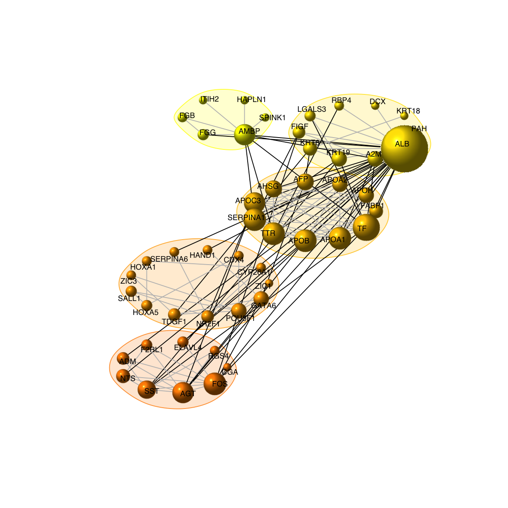
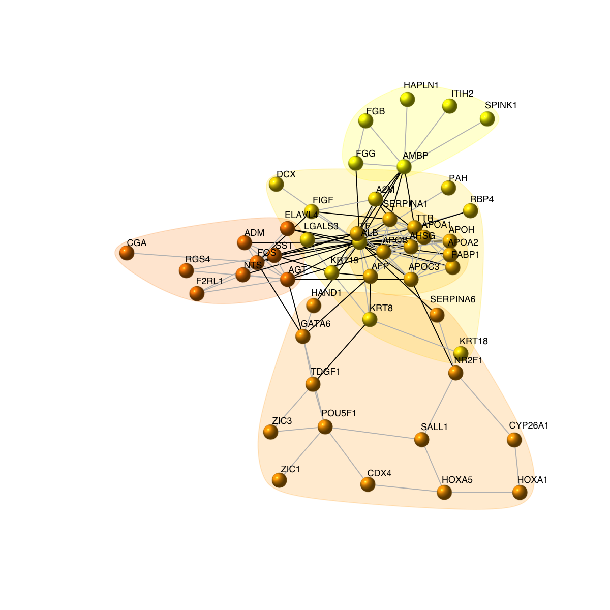
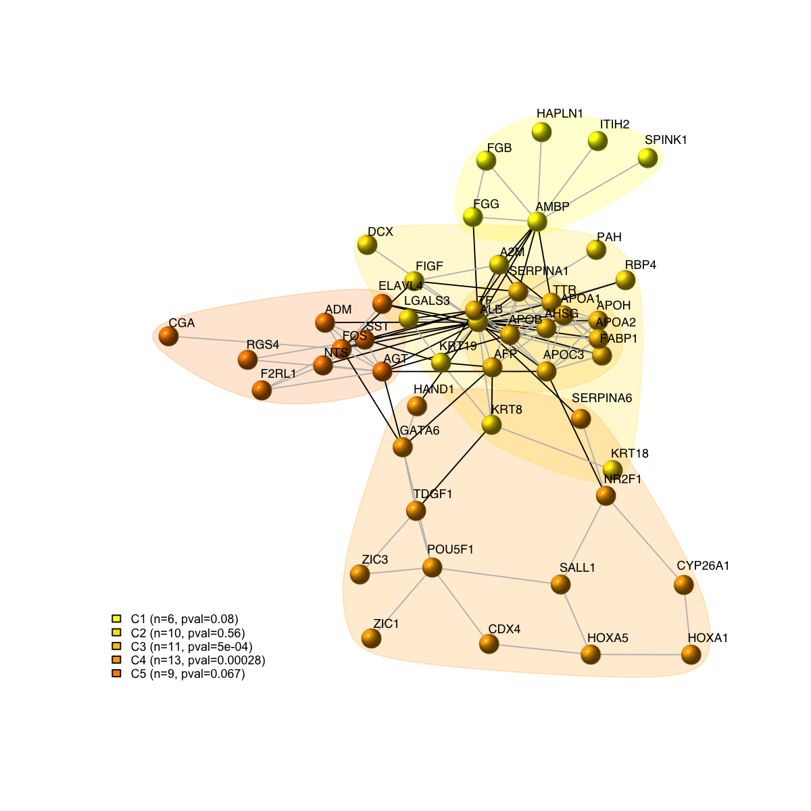

Demo for time-course expression dataset
Notes:
# This is a demo for human embryo dataset from Fang et al
#
# This human embryo expression dataset (available from http://www.ncbi.nlm.nih.gov/pubmed/20643359) involves six successive developmental stages (S9-S14) with three replicates (R1-R3) for each stage, including:
## Fang: an expression matrix of 5,441 genes X 18 samples;
## Fang.geneinfo: a matrix of 5,441 X 3 containing gene information;
## Fang.sampleinfo: a matrix of 18 X 3 containing sample information.
###############################################################################
library(dnet)
# Load or install packages specifically used in this demo
for(pkg in c("Biobase","limma")){
if(!require(pkg, character.only=T)){
source("http://bioconductor.org/biocLite.R")
biocLite(pkg)
lapply(pkg, library, character.only=T)
}
}
# import data containing three variables ('Fang', 'Fang.geneinfo' and 'Fang.sampleinfo')
data(Fang)
data <- Fang
fdata <- as.data.frame(Fang.geneinfo[,2:3])
rownames(fdata) <- Fang.geneinfo[,1]
pdata <- as.data.frame(Fang.sampleinfo[,2:3])
rownames(pdata) <- Fang.sampleinfo[,1]
# create the 'eset' object
colmatch <- match(rownames(pdata),colnames(data))
rowmatch <- match(rownames(fdata),rownames(data))
data <- data[rowmatch,colmatch]
eset <- new("ExpressionSet", exprs=as.matrix(data), phenoData=as(pdata,"AnnotatedDataFrame"), featureData=as(fdata,"AnnotatedDataFrame"))
# A function to convert probeset-centric to entrezgene-centric expression levels
prob2gene <- function(eset){
fdat <- fData(eset)
tmp <- as.matrix(unique(fdat[c("EntrezGene", "Symbol")]))
forder <- tmp[order(as.numeric(tmp[,1])),]
forder <- forder[!is.na(forder[,1]),]
rownames(forder) <- forder[,2]
system.time({
dat <- exprs(eset)
edat <- matrix(data=NA, nrow=nrow(forder), ncol=ncol(dat))
for (i in 1:nrow(forder)){
ind <- which(fdat$EntrezGene==as.numeric(forder[i,1]))
if (length(ind) == 1){
edat[i,] <- dat[ind,]
}else{
edat[i,] <- apply(dat[ind,],2,mean)
}
}
})
rownames(edat) <- rownames(forder) # as gene symbols
colnames(edat) <- rownames(pData(eset))
esetGene <- new('ExpressionSet',exprs=data.frame(edat),phenoData=as(pData(eset),"AnnotatedDataFrame"),featureData=as(data.frame(forder),"AnnotatedDataFrame"))
return(esetGene)
}
esetGene <- prob2gene(eset)
esetGene
ExpressionSet (storageMode: lockedEnvironment)
assayData: 4139 features, 18 samples
element names: exprs
protocolData: none
phenoData
sampleNames: S9_R1 S9_R2 ... S14_R3 (18 total)
varLabels: Stage Replicate
varMetadata: labelDescription
featureData
featureNames: A2M AADAC ... LOC100131613 (4139 total)
fvarLabels: EntrezGene Symbol
fvarMetadata: labelDescription
experimentData: use 'experimentData(object)'
Annotation:
# An igraph object that contains a functional protein association network in human. The network is extracted from the STRING database (version 9.1). Only those associations with medium confidence (score>=400) are retained.
org.Hs.string <- dRDataLoader(RData='org.Hs.string')
'org.Hs.string' (from http://dnet.r-forge.r-project.org/data/Hs/org.Hs.string.RData) has been loaded into the working environment
org.Hs.string
IGRAPH UN-- 16973 410824 --
+ attr: name (v/c), seqid (v/c), geneid (v/n), symbol (v/c),
description (v/c), neighborhood_score (e/n), fusion_score (e/n),
cooccurence_score (e/n), coexpression_score (e/n), experimental_score
(e/n), database_score (e/n), textmining_score (e/n), combined_score
(e/n)
# extract network that only contains genes in esetGene
ind <- match(V(org.Hs.string)$symbol, rownames(esetGene))
## for extracted expression
esetGeneSub <- esetGene[ind[!is.na(ind)],]
esetGeneSub
ExpressionSet (storageMode: lockedEnvironment)
assayData: 3590 features, 18 samples
element names: exprs
protocolData: none
phenoData
sampleNames: S9_R1 S9_R2 ... S14_R3 (18 total)
varLabels: Stage Replicate
varMetadata: labelDescription
featureData
featureNames: RAB7L1 KLF10 ... NGFR (3590 total)
fvarLabels: EntrezGene Symbol
fvarMetadata: labelDescription
experimentData: use 'experimentData(object)'
Annotation:
## for extracted graph
nodes_mapped <- V(org.Hs.string)$name[!is.na(ind)]
network <- dNetInduce(g=org.Hs.string, nodes_query=nodes_mapped, knn=0, remove.loops=T, largest.comp=T)
V(network)$name <- V(network)$symbol
network
IGRAPH UN-- 3385 39961 --
+ attr: name (v/c), seqid (v/c), geneid (v/n), symbol (v/c),
description (v/c)
# prepare the expression matrix
D <- as.matrix(exprs(esetGene))
D <- D - as.matrix(apply(D,1,mean),ncol=1)[,rep(1,ncol(D))]
# heatmap of expression matrix with rows ordered according the dominant patterns
sorted <- sort.int(D %*% svd(D)$v[,1], decreasing=T, index.return=T)
mat_data <- D[sorted$ix,]
# prepare colors for the column sidebar
# color for stages (S9-S14)
stages <- sub("_.*","",colnames(mat_data))
lvs <- unique(stages)
lvs_color <- visColormap(colormap="rainbow")(length(lvs))
col_stages <- sapply(stages, function(x) lvs_color[x==lvs])
# color for replicates (R1-R3)
replicates <- sub(".*_","",colnames(mat_data))
lvs <- unique(replicates)
lvs_color <- visColormap(colormap="rainbow")(length(lvs))
col_replicates <- sapply(replicates, function(x) lvs_color[x==lvs])
# combine both color vectors
ColSideColors <- cbind(col_stages,col_replicates)
colnames(ColSideColors) <- c("Stages","Replicates")
visHeatmapAdv(mat_data, Rowv=FALSE, Colv=FALSE, colormap="gbr", zlim=c(-1,1), density.info="density", tracecol="yellow", ColSideColors=ColSideColors, labRow=NA)
 #legend("topright", legend=lvs, col=lvs_color, lty=1, lwd=10)
# 1) preparation of node significance
## define the design matrix in a order manner
all <- as.vector(pData(esetGene)$Stage)
level <- levels(factor(all))
index_level <- sapply(level, function(x) which(all==x)[1])
level_sorted <- all[sort(index_level, decreasing=F)]
design <- sapply(level_sorted, function(x) as.numeric(all==x)) # Convert a factor column to multiple boolean columns
## a linear model is fitted for every gene by the function lmFit
fit <- lmFit(exprs(esetGene), design)
## define a contrast matrix
contrasts <- dContrast(level_sorted, contrast.type="average")
contrast.matrix <- makeContrasts(contrasts=contrasts$each, levels=design)
colnames(contrast.matrix) <- contrasts$name
## computes moderated t-statistics and log-odds of differential expression by empirical Bayes shrinkage of the standard errors towards a common value
fit2 <- contrasts.fit(fit, contrast.matrix)
fit2 <- eBayes(fit2)
# for p-value
pvals <- as.matrix(fit2$p.value)
# for adjusted p-value
adjpvals <- sapply(1:ncol(pvals),function(x) {
p.adjust(pvals[,x], method="BH")
})
colnames(adjpvals) <- colnames(pvals)
# num of differentially expressed genes
apply(adjpvals<1e-2, 2, sum)
S9 S10 S11 S12 S13 S14
3125 1764 485 461 1996 2556
# obtain gene significance from the given gene-sample matrix according to singular value decomposition-based method
fdr <- dSVDsignif(data=D, num.eigen=NULL, pval.eigen=1e-2, signif="fdr", orient.permutation="row", num.permutation=200, fdr.procedure="stepup", verbose=T)
Start at 2014-05-19 15:51:55
First, singular value decomposition of the input matrix (with 4139 rows and 18 columns)...
Second, determinate the eigens...
via automatically deciding on the number of dominant eigens under the cutoff of 1.00e-02 pvalue
number of the eigens in consideration: 2
Third, construct the gene-specific projection vector,and calculate distance statistics...
Finally, obtain gene significance (fdr) based on 200 permutations...
doing row-wise permutations...
estimating fdr...
1 (out of 4139) at 2014-05-19 15:52:16
414 (out of 4139) at 2014-05-19 15:52:26
828 (out of 4139) at 2014-05-19 15:52:36
1242 (out of 4139) at 2014-05-19 15:52:46
1656 (out of 4139) at 2014-05-19 15:52:56
2070 (out of 4139) at 2014-05-19 15:53:06
2484 (out of 4139) at 2014-05-19 15:53:16
2898 (out of 4139) at 2014-05-19 15:53:25
3312 (out of 4139) at 2014-05-19 15:53:35
3726 (out of 4139) at 2014-05-19 15:53:45
4139 (out of 4139) at 2014-05-19 15:53:55
using stepup procedure...
Finish at 2014-05-19 15:53:55
Runtime in total is: 120 secs
# 2) identification of module
g <- dNetPipeline(g=network, pval=fdr, method="customised", nsize=30)
Start at 2014-05-19 15:53:55
First, consider the input fdr (or p-value) distribution
Second, determine the significance threshold...
Via constraint on the size of subnetwork to be identified (30 nodes)
Scanning significance threshold at rough stage...
significance threshold: 1.00e-02, corresponding to the network size (0 nodes)
significance threshold: 1.00e-01, corresponding to the network size (396 nodes)
Scanning significance threshold at finetune stage...
significance threshold : 1.50e-02, corresponding to the network size (0 nodes)
significance threshold : 2.00e-02, corresponding to the network size (54 nodes)
significance threshold: 2.00e-02
Third, calculate the scores according to the input fdr (or p-value) and the threshold (if any)...
Amongst 4139 scores, there are 82 positives.
Finally, find the subgraph from the input graph with 3385 nodes and 39961 edges...
Size of the subgraph: 54 nodes and 226 edges
Finish at 2014-05-19 15:54:28
Runtime in total is: 33 secs
glayout <- layout.fruchterman.reingold(g)
# 3) color nodes according to communities identified via a spin-glass model and simulated annealing
#com <- walktrap.community(g, modularity=T)
com <- spinglass.community(g, spins=25)
com$csize <- sapply(1:length(com),function(x) sum(com$membership==x))
vgroups <- com$membership
colormap <- "yellow-darkorange"
palette.name <- visColormap(colormap=colormap)
mcolors <- palette.name(length(com))
vcolors <- mcolors[vgroups]
com$significance <- dCommSignif(g, com)
# 4) size nodes according to degrees
vdegrees <- igraph::degree(g)
# 5) sort nodes: first by communities and then degrees
tmp <- data.frame(ind=1:vcount(g), vgroups, vdegrees)
ordering <- tmp[order(vgroups,vdegrees),]$ind
# 6) visualise graph using 1-dimensional arc diagram
visNetArc(g, ordering=ordering, labels=V(g)$geneSymbol, vertex.label.color=vcolors, vertex.color=vcolors, vertex.frame.color=vcolors, vertex.size=log(vdegrees)+0.1, vertex.label.cex=0.4)
#legend("topright", legend=lvs, col=lvs_color, lty=1, lwd=10)
# 1) preparation of node significance
## define the design matrix in a order manner
all <- as.vector(pData(esetGene)$Stage)
level <- levels(factor(all))
index_level <- sapply(level, function(x) which(all==x)[1])
level_sorted <- all[sort(index_level, decreasing=F)]
design <- sapply(level_sorted, function(x) as.numeric(all==x)) # Convert a factor column to multiple boolean columns
## a linear model is fitted for every gene by the function lmFit
fit <- lmFit(exprs(esetGene), design)
## define a contrast matrix
contrasts <- dContrast(level_sorted, contrast.type="average")
contrast.matrix <- makeContrasts(contrasts=contrasts$each, levels=design)
colnames(contrast.matrix) <- contrasts$name
## computes moderated t-statistics and log-odds of differential expression by empirical Bayes shrinkage of the standard errors towards a common value
fit2 <- contrasts.fit(fit, contrast.matrix)
fit2 <- eBayes(fit2)
# for p-value
pvals <- as.matrix(fit2$p.value)
# for adjusted p-value
adjpvals <- sapply(1:ncol(pvals),function(x) {
p.adjust(pvals[,x], method="BH")
})
colnames(adjpvals) <- colnames(pvals)
# num of differentially expressed genes
apply(adjpvals<1e-2, 2, sum)
S9 S10 S11 S12 S13 S14
3125 1764 485 461 1996 2556
# obtain gene significance from the given gene-sample matrix according to singular value decomposition-based method
fdr <- dSVDsignif(data=D, num.eigen=NULL, pval.eigen=1e-2, signif="fdr", orient.permutation="row", num.permutation=200, fdr.procedure="stepup", verbose=T)
Start at 2014-05-19 15:51:55
First, singular value decomposition of the input matrix (with 4139 rows and 18 columns)...
Second, determinate the eigens...
via automatically deciding on the number of dominant eigens under the cutoff of 1.00e-02 pvalue
number of the eigens in consideration: 2
Third, construct the gene-specific projection vector,and calculate distance statistics...
Finally, obtain gene significance (fdr) based on 200 permutations...
doing row-wise permutations...
estimating fdr...
1 (out of 4139) at 2014-05-19 15:52:16
414 (out of 4139) at 2014-05-19 15:52:26
828 (out of 4139) at 2014-05-19 15:52:36
1242 (out of 4139) at 2014-05-19 15:52:46
1656 (out of 4139) at 2014-05-19 15:52:56
2070 (out of 4139) at 2014-05-19 15:53:06
2484 (out of 4139) at 2014-05-19 15:53:16
2898 (out of 4139) at 2014-05-19 15:53:25
3312 (out of 4139) at 2014-05-19 15:53:35
3726 (out of 4139) at 2014-05-19 15:53:45
4139 (out of 4139) at 2014-05-19 15:53:55
using stepup procedure...
Finish at 2014-05-19 15:53:55
Runtime in total is: 120 secs
# 2) identification of module
g <- dNetPipeline(g=network, pval=fdr, method="customised", nsize=30)
Start at 2014-05-19 15:53:55
First, consider the input fdr (or p-value) distribution
Second, determine the significance threshold...
Via constraint on the size of subnetwork to be identified (30 nodes)
Scanning significance threshold at rough stage...
significance threshold: 1.00e-02, corresponding to the network size (0 nodes)
significance threshold: 1.00e-01, corresponding to the network size (396 nodes)
Scanning significance threshold at finetune stage...
significance threshold : 1.50e-02, corresponding to the network size (0 nodes)
significance threshold : 2.00e-02, corresponding to the network size (54 nodes)
significance threshold: 2.00e-02
Third, calculate the scores according to the input fdr (or p-value) and the threshold (if any)...
Amongst 4139 scores, there are 82 positives.
Finally, find the subgraph from the input graph with 3385 nodes and 39961 edges...
Size of the subgraph: 54 nodes and 226 edges
Finish at 2014-05-19 15:54:28
Runtime in total is: 33 secs
glayout <- layout.fruchterman.reingold(g)
# 3) color nodes according to communities identified via a spin-glass model and simulated annealing
#com <- walktrap.community(g, modularity=T)
com <- spinglass.community(g, spins=25)
com$csize <- sapply(1:length(com),function(x) sum(com$membership==x))
vgroups <- com$membership
colormap <- "yellow-darkorange"
palette.name <- visColormap(colormap=colormap)
mcolors <- palette.name(length(com))
vcolors <- mcolors[vgroups]
com$significance <- dCommSignif(g, com)
# 4) size nodes according to degrees
vdegrees <- igraph::degree(g)
# 5) sort nodes: first by communities and then degrees
tmp <- data.frame(ind=1:vcount(g), vgroups, vdegrees)
ordering <- tmp[order(vgroups,vdegrees),]$ind
# 6) visualise graph using 1-dimensional arc diagram
visNetArc(g, ordering=ordering, labels=V(g)$geneSymbol, vertex.label.color=vcolors, vertex.color=vcolors, vertex.frame.color=vcolors, vertex.size=log(vdegrees)+0.1, vertex.label.cex=0.4)
 # 7) visualise graph using circle diagram
# 7a) drawn into a single circle
visNetCircle(g=g, com=com, ordering=ordering, colormap=colormap, vertex.label=V(g)$symbol, vertex.size=igraph::degree(g)+5, vertex.label.color="black", vertex.label.cex=0.6, vertex.label.dist=0.75, vertex.shape="sphere", edge.color.within="grey", edge.color.crossing="black", edge.width=1, edge.lty=1, mark.shape=1, mark.expand=10)
# 7) visualise graph using circle diagram
# 7a) drawn into a single circle
visNetCircle(g=g, com=com, ordering=ordering, colormap=colormap, vertex.label=V(g)$symbol, vertex.size=igraph::degree(g)+5, vertex.label.color="black", vertex.label.cex=0.6, vertex.label.dist=0.75, vertex.shape="sphere", edge.color.within="grey", edge.color.crossing="black", edge.width=1, edge.lty=1, mark.shape=1, mark.expand=10)
 # 7b) drawn into multiple circles
visNetCircle(g=g, com=com, circles="multiple", ordering=ordering, colormap=colormap, vertex.label=V(g)$symbol, vertex.size=igraph::degree(g)+5, vertex.label.color="black", vertex.label.cex=0.6, vertex.label.dist=0.25, vertex.shape="sphere", edge.color.within="grey", edge.color.crossing="black", edge.width=1, edge.lty=1, mark.shape=1, mark.expand=10)

# 8) as comparison, also visualise graph on 2-dimensional layout
mark.groups <- communities(com)
mark.col <- visColoralpha(mcolors, alpha=0.2)
mark.border <- visColoralpha(mcolors, alpha=0.2)
edge.color <- c("grey", "black")[crossing(com,g)+1]
visNet(g, glayout=glayout, vertex.label=V(g)$geneSymbol, vertex.color=vcolors, vertex.frame.color=vcolors, vertex.shape="sphere", mark.groups=mark.groups, mark.col=mark.col, mark.border=mark.border, mark.shape=1, mark.expand=10, edge.color=edge.color)

legend_name <- paste("C",1:length(mcolors)," (n=",com$csize,", pval=",signif(com$significance,digits=2),")",sep='')
legend("bottomleft", legend=legend_name, fill=mcolors, bty="n", cex=0.6)

# 9) color by score
# colored by score
visNet(g, glayout=glayout, pattern=V(g)$score, zlim=c(-1*ceiling(max(abs(V(g)$score))),ceiling(max(abs(V(g)$score)))), vertex.shape="circle", mark.groups=mark.groups, mark.col=mark.col, mark.border=mark.border, mark.shape=1, mark.expand=10, edge.color=edge.color)

# 10) color by additional data
colormap <- "darkgreen-lightgreen-lightpink-darkred"
data <- as.matrix(fit2$coefficients[V(g)$name,])
visNetMul(g=g, data=data, height=ceiling(sqrt(ncol(data)))*2, newpage=T,glayout=glayout,colormap=colormap,vertex.label=NA,vertex.shape="sphere", vertex.size=16,mtext.cex=0.8,border.color="888888", mark.groups=mark.groups, mark.col=mark.col, mark.border=mark.border, mark.shape=1, mark.expand=10, edge.color=edge.color)

# 11) color by additional data (be reordered)
sReorder <- dNetReorder(g, data, feature="edge", node.normalise="degree", amplifier=2, metric="none")
Start at 2014-05-19 15:56:02
First, define topology of a map grid...
Second, initialise the codebook matrix given a topology and input data...
Third, get training at the rough stage...
Fourth, get training at the finetune stage...
Next, identify the best-matching hexagon/rectangle for the input data...
Finally, append the response data (hits and mqe) into the sMap object...
Below are the summaries of the training results:
dimension of input data: 6x226
xy-dimension of map grid: xdim=4, ydim=4
grid lattice: rect
grid shape: sheet
dimension of grid coord: 16x2
initialisation method: linear
dimension of codebook matrix: 16x226
mean quantization error: 0.581187704956089
Below are the details of trainology:
training algorithm: sequential
alpha type: invert
training neighborhood kernel: gaussian
trainlength (x input data length): 27 at rough stage; 107 at finetune stage
radius (at rough stage): from 1 to 1
radius (at finetune stage): from 1 to 1
End at 2014-05-19 15:56:02
Runtime in total is: 0 secs
visNetReorder(g=g, data=data, sReorder=sReorder, height=ceiling(sqrt(ncol(data)))*2, newpage=T, glayout=glayout, colormap=colormap, vertex.label=NA,vertex.shape="sphere", vertex.size=16,mtext.cex=0.8,border.color="888888", mark.groups=mark.groups, mark.col=mark.col, mark.border=NA, mark.shape=1, mark.expand=10, edge.color=edge.color)
# 7b) drawn into multiple circles
visNetCircle(g=g, com=com, circles="multiple", ordering=ordering, colormap=colormap, vertex.label=V(g)$symbol, vertex.size=igraph::degree(g)+5, vertex.label.color="black", vertex.label.cex=0.6, vertex.label.dist=0.25, vertex.shape="sphere", edge.color.within="grey", edge.color.crossing="black", edge.width=1, edge.lty=1, mark.shape=1, mark.expand=10)

# 8) as comparison, also visualise graph on 2-dimensional layout
mark.groups <- communities(com)
mark.col <- visColoralpha(mcolors, alpha=0.2)
mark.border <- visColoralpha(mcolors, alpha=0.2)
edge.color <- c("grey", "black")[crossing(com,g)+1]
visNet(g, glayout=glayout, vertex.label=V(g)$geneSymbol, vertex.color=vcolors, vertex.frame.color=vcolors, vertex.shape="sphere", mark.groups=mark.groups, mark.col=mark.col, mark.border=mark.border, mark.shape=1, mark.expand=10, edge.color=edge.color)

legend_name <- paste("C",1:length(mcolors)," (n=",com$csize,", pval=",signif(com$significance,digits=2),")",sep='')
legend("bottomleft", legend=legend_name, fill=mcolors, bty="n", cex=0.6)

# 9) color by score
# colored by score
visNet(g, glayout=glayout, pattern=V(g)$score, zlim=c(-1*ceiling(max(abs(V(g)$score))),ceiling(max(abs(V(g)$score)))), vertex.shape="circle", mark.groups=mark.groups, mark.col=mark.col, mark.border=mark.border, mark.shape=1, mark.expand=10, edge.color=edge.color)

# 10) color by additional data
colormap <- "darkgreen-lightgreen-lightpink-darkred"
data <- as.matrix(fit2$coefficients[V(g)$name,])
visNetMul(g=g, data=data, height=ceiling(sqrt(ncol(data)))*2, newpage=T,glayout=glayout,colormap=colormap,vertex.label=NA,vertex.shape="sphere", vertex.size=16,mtext.cex=0.8,border.color="888888", mark.groups=mark.groups, mark.col=mark.col, mark.border=mark.border, mark.shape=1, mark.expand=10, edge.color=edge.color)

# 11) color by additional data (be reordered)
sReorder <- dNetReorder(g, data, feature="edge", node.normalise="degree", amplifier=2, metric="none")
Start at 2014-05-19 15:56:02
First, define topology of a map grid...
Second, initialise the codebook matrix given a topology and input data...
Third, get training at the rough stage...
Fourth, get training at the finetune stage...
Next, identify the best-matching hexagon/rectangle for the input data...
Finally, append the response data (hits and mqe) into the sMap object...
Below are the summaries of the training results:
dimension of input data: 6x226
xy-dimension of map grid: xdim=4, ydim=4
grid lattice: rect
grid shape: sheet
dimension of grid coord: 16x2
initialisation method: linear
dimension of codebook matrix: 16x226
mean quantization error: 0.581187704956089
Below are the details of trainology:
training algorithm: sequential
alpha type: invert
training neighborhood kernel: gaussian
trainlength (x input data length): 27 at rough stage; 107 at finetune stage
radius (at rough stage): from 1 to 1
radius (at finetune stage): from 1 to 1
End at 2014-05-19 15:56:02
Runtime in total is: 0 secs
visNetReorder(g=g, data=data, sReorder=sReorder, height=ceiling(sqrt(ncol(data)))*2, newpage=T, glayout=glayout, colormap=colormap, vertex.label=NA,vertex.shape="sphere", vertex.size=16,mtext.cex=0.8,border.color="888888", mark.groups=mark.groups, mark.col=mark.col, mark.border=NA, mark.shape=1, mark.expand=10, edge.color=edge.color)
 # 12) heatmap of subnetwork
visHeatmapAdv(data, colormap="gbr", row.cutree=3, column.cutree=3)
# 12) heatmap of subnetwork
visHeatmapAdv(data, colormap="gbr", row.cutree=3, column.cutree=3)
 hmap <- data.frame(Symbol=rownames(data), data)
write.table(hmap, file=paste("Fang_whole.txt", sep=""), quote=F, row.names=F,col.names=T,sep="\t")
# 13) Write the subnetwork into a SIF-formatted file (Simple Interaction File)
sif <- data.frame(source=get.edgelist(g)[,1], type="interaction", target=get.edgelist(g)[,2])
write.table(sif, file=paste("Fang_whole.sif", sep=""), quote=F, row.names=F,col.names=F,sep="\t")
hmap <- data.frame(Symbol=rownames(data), data)
write.table(hmap, file=paste("Fang_whole.txt", sep=""), quote=F, row.names=F,col.names=T,sep="\t")
# 13) Write the subnetwork into a SIF-formatted file (Simple Interaction File)
sif <- data.frame(source=get.edgelist(g)[,1], type="interaction", target=get.edgelist(g)[,2])
write.table(sif, file=paste("Fang_whole.sif", sep=""), quote=F, row.names=F,col.names=F,sep="\t")
)
)
)
)
)
){kind=link}
){kind=link}
){kind=link}
){kind=link}
){kind=link}
Citation
Fang H, Gough J. (2014) dnet: an open-source R package for omics data integrative analysis in terms of network, evolution and ontology. http://dnet.r-forge.r-project.org